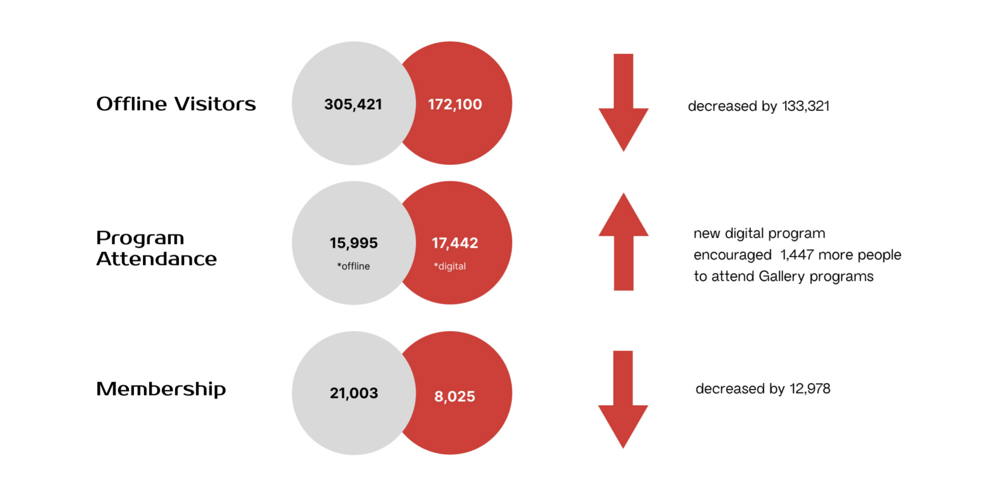
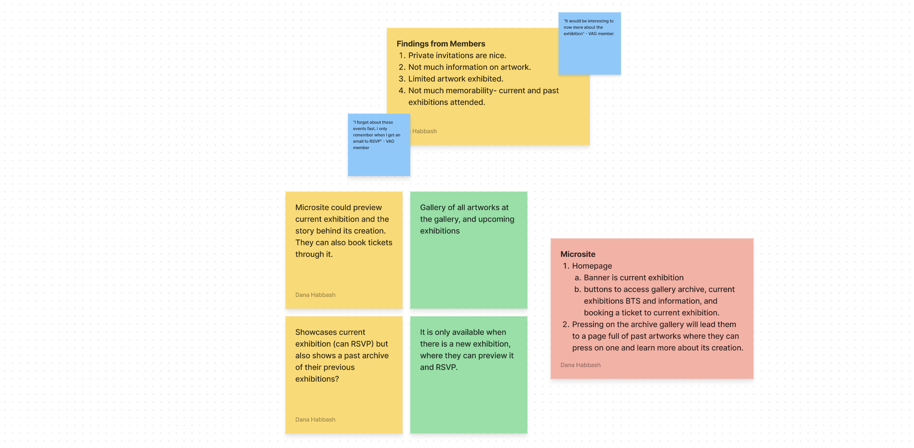
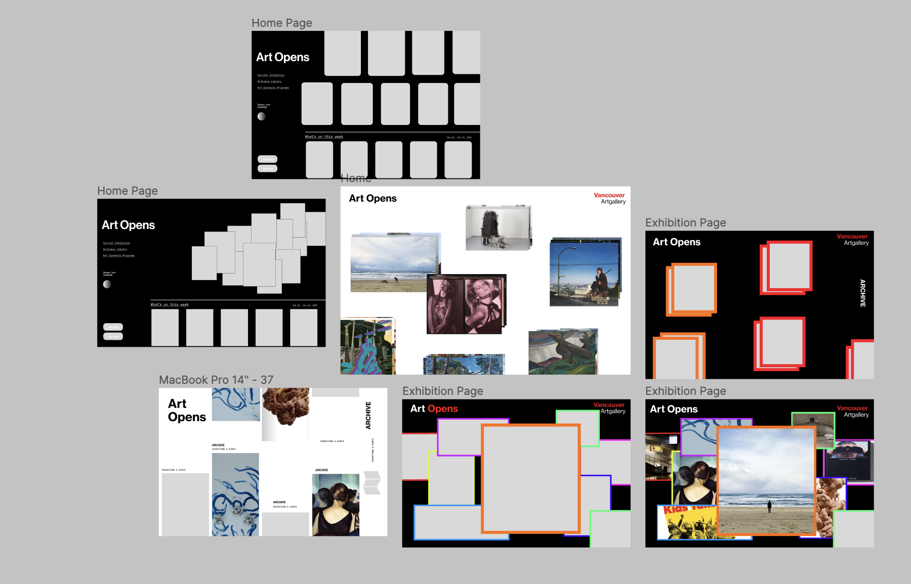
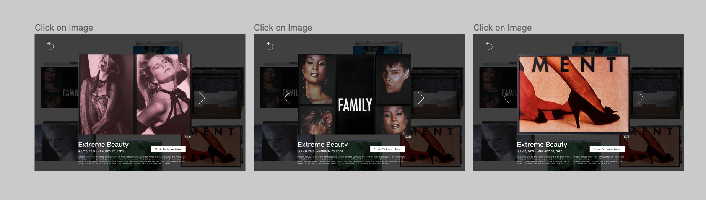

Overview
Choosing Our Company
Vancouver Art Gallery is a not-for-profit organization with its main support coming from members, individual donors, corporate funders, foundations, the City of Vancouver, the Province of British Columbia through the British Columbia Arts Council, and the Canada Council for the Arts.
When my team, Tiffany, Yumi, Monica, Mia, and I took an information design course conducted by Professor Russell Taylor, we were given a 3-week project to choose a local company, or organization with the aim of creating a microsite that will boost their traffic flow. Thus, as a team we decided to choose Vancouver Art Gallery. We came up with Art Opens, a members-exclusive microsite aimed to prioritize members and give them access to new exhibitions, detailed art information, and first viewing access.
Research
Findings
VAG is a not-for-profit organization that has its main funding come from memberships; however, as we conducted our secondary research we came to the following findings.
I found that offline attendance has tremendously decreased, while digital programs have encouraged more people to attend the gallery. Moreover, I came to find that the memberships have heavily decreased as well, which is a direct issue affecting VAG as that is where a part of their funding comes from.
Through these findings, I began questioning how we could possibly attract and maintain members, in the long run, and while simultaneously increasing offline traffic flow to the gallery..
Insights from VAG Members
The primary findings were quite general, so we were unsure of our next steps. Fortunately, one of my team members, Tiffany, who is a member of the Vancouver Art Gallery (VAG),invited me to a members-only event. At the event, I took the opportunity to speak with several attendees about their experiences with the gallery and their opinions on the value of their memberships. This interaction provided me with valuable insights into how members engage with art exhibitions and what they value most in their memberships.
Taking these findings,I began brainstorming possible ideas that would satisfy the issues members had with their membership and the gallery as a whole. As a team, we reconvened and tweaked the ideas and set the main elements that we believed the microsite needed to contain.
High-Fidelity Prototype
With not much time left, I began design high-fidelity prototypes for the archive section of the microsite.
When designing the archive section I knew I wanted it to feel like photo gallery, to add a personal touch as if members are looking at their personal phone image gallery. I looked at numerous website galleries for inspiration and put together different possible layouts. I also designed the preview, when pressing on an artwork.
 Result
Introducing Art Opens
Takeaways
Reflection
This was my first time working on such a project and it was very eye-opening to the process of UX/UI design. I found myself multiple times designing with my mind and for myself, and considering user research as a plus that could maybe make the result better. However, I was pleased to find out that the foundation of these projects are the users and what they want and need.
Moreover,it was very challenging to work for such a big organization because we could not get a hold of anyone that could have possibly helped us or given us any information. Because of this I had to venture out and do a deeper dive into their organization and be comfortable approaching members and getting information from them directly. Also, being confident in the designs I decided on because I could not get any direct feedback from VAG themselves.
Overall, the project was a great introduction into the world of UX/UI design and our mentors were very helpful and pleased with our end result!